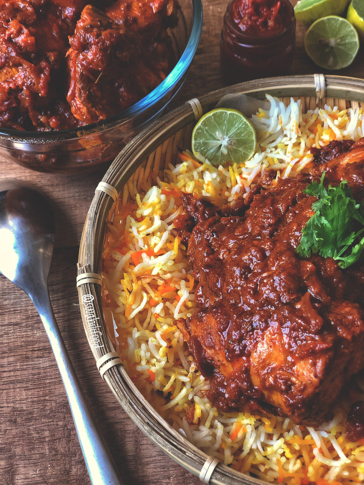

Biryani

Description
Biryani is a flavorful and aromatic rice dish that originates from the Indian subcontinent. It is a beloved culinary masterpiece known for its rich blend of spices, tender meat, and fragrant rice. The dish typically consists of long-grain Basmati rice cooked with succulent pieces of meat, such as chicken, lamb, or goat, although there are also vegetarian versions available. Biryani is infused with a medley of spices, including cumin, coriander, cardamom, cloves, and cinnamon, which impart a depth of flavor and complexity to the dish. Additionally, it often features saffron-infused rice, which gives it a vibrant yellow hue and a subtle floral aroma. Biryani is typically layered and cooked in a sealed pot, allowing the flavors to meld together and the meat to become tender and juicy. Garnished with fried onions, fresh herbs, and sometimes boiled eggs, biryani is not just a meal but a culinary experience that delights the senses and brings people together in celebration of its exquisite taste and tradition.
________________________________________________________________________________________________________________________________________________
Ingredients
- 1 teaspoon ground cumin seeds
- 1 teaspoon ground coriander seeds
- 1/4 teaspoon turmeric
- 1/2 teaspoon chilli powder
- 1/2 teaspoon ground cinnamon
- A pinch of ground cloves
- 1/2 teaspoon ground green cardamom
________________________________________________________________________________________________________________________________________________
Steps
- If using meat, marinate it with yogurt, ginger-garlic paste, and a blend of spices for a few hours or overnight in the refrigerator. This helps tenderize the meat and infuse it with flavor.
- Wash and soak the Basmati rice for about 30 minutes. Then, cook the rice with whole spices like cloves, cardamom, and bay leaves until it's about 70-80% done. Drain the rice and set it aside.
- Slice the onions and tomatoes. Chop the fresh herbs (cilantro and mint). Soak saffron strands in warm milk.
- In a large pot, heat ghee or oil and sauté the sliced onions until golden brown. Add the marinated meat and cook until it's partially done. Then, add the chopped tomatoes and cook until they soften and release their juices.
- In a separate heavy-bottomed pot or pan, layer the partially cooked rice and the cooked meat mixture. Sprinkle each layer with fresh herbs, fried onions, and saffron-infused milk. Repeat the layers until all the rice.
- Cover the pot with a tight-fitting lid or seal it with dough to prevent steam from escaping. Cook the biryani on low heat for about 20-25 minutes, allowing the flavors to meld together and the rice to fully cook.
- Once cooked, gently fluff up the biryani with a fork. Serve hot, garnished with fried onions, boiled eggs, and nuts if desired. Accompany it with raita (yogurt dip) and salad for a complete meal.